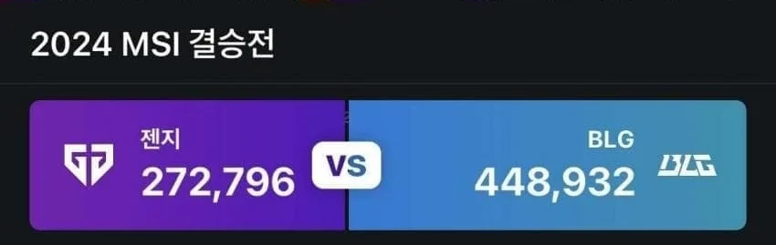
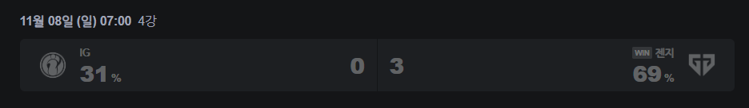

2024 msi 승부예측에서 BLG가 우세했던 짤을
AI로 이미지 생성해서 역배투표인 척 날조하고 댓글은 티원 머리채 잡는 중 보면 숫자 다 깨지고 쉼표 모양은 아예 다름

이게 실제 승부예측

2024 msi 승부예측에서 BLG가 우세했던 짤을
AI로 이미지 생성해서 역배투표인 척 날조하고 댓글은 티원 머리채 잡는 중 보면 숫자 다 깨지고 쉼표 모양은 아예 다름

이게 실제 승부예측
그럴수도 있댔지 ㅋㅋㅋㅋ 아 쵸비 또 우승못했네 ㅋㅋㅋㅋㅋㅋ 개꿀잼 ㅋㅋ
그럼 처음부터 그럴수도 있댔지 라고 했어야지 개붕아
너는 실시간 응원정보라고 주작질하면서 "정신병자니 주작이라느니 소리한건 취소해주길 바라 :)"
라고 했잖아
나도 그래서 너한테 같은것을 요구하는데 너는 싫은거야?
가능성을 말했잖어 너한테 ㅋㅋ 잘찾아보렴 ㅋㅋㅋ 난 이제 젠첩들 놀리러 가야해서 안녕ㅋㅋㅋㅌ
그런데 너는 다른 사람들한테는 그냥 사실인양 말했잖아
왜 다른 사람들에게 주작질한거야
그렇다고 해서 니가 실시간 응원 정보라고 주작질한게 사라지는게 아니야